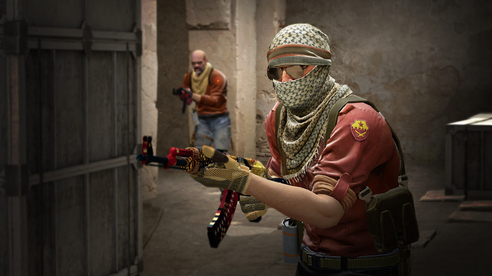

About CS:GO

Counter-Strike: Global Offensive (CS:GO) expands upon the team-based first person shooter gameplay the original Counter-Strike pioneered when it launched in 1999. Two teams compete in multiple rounds of objective-based game modes with the goal of winning enough rounds to win the match.
CS:GO features new maps, characters, and weapons and delivers updated versions of the classic Counter-Strike maps like Dust, Inferno, Nuke, Train, and more. In addition, CS:GO introduces new game modes like Arms Race, Flying Scoutsman and Wingman, and features online matchmaking and Competitive Skill Groups.
Game Modes
Competitive
This is the classic game mode that put Counter-Strike on the map. Two teams of five compete in a best-of-30 match using standard competitive Counter-Strike rules.
Players must purchase armor, weapons, defuse or rescue kits, and manage their in-game economy to maximize their chance of success. The first team to win 16 rounds in either Bomb Defusal or Hostage Rescue game modes wins the match.
Competitive offers unique Skill Groups players can earn and display, beginning with Silver 1 and progressing up to The Global Elite. Join a match on your own or form a team and queue for a match together!
Wingman
Queue by yourself or grab a friend in this 2v2 best-of-16 game mode on single bomb site maps. Players earn a Skill Group exclusive to Wingman and play using the Competitive Bomb Defusal ruleset. Buy weapons, armor, and defuse kits in an effort to plant the bomb or defend the bomb site!
Casual
Ready to play some Counter-Strike but don’t want to commit to a full 30 round match? Find a Casual match and play at your own pace in this drop-in, drop-out game mode.

In Casual mode players automatically receive armor and defusal kits, play with a simplified economy, and team damage has been turned off. Join a game and begin mastering CS:GO’s fundamentals!
Deathmatch
This fast-paced Casual game mode allows instant respawns and encourages rapid engagements. After spawning, players have a limited amount of time to buy weapons of their choice and engage the enemy.
Kills with different weapons are worth different point amounts, and throughout the match players will be given bonus points for achieving kills with selected weapons. Respawn immediately and get back to the fight!
Arms Race
Arms race is a gun-progression mode featuring instant respawning designed for rapid close quarters combat.
Players gain new weapons immediately after registering a kill as they work their way through each weapon in the game. Get a kill with the final weapon, the golden knife, and win the match!
Demolition
In Demolition players take turns attacking and defending a single bombsite in a series of maps designed for fast-paced gameplay.
Players are automatically granted a starting weapon and advance through a sequence of firearms when they register a kill. The more kills you earn the further you’ll advance towards stronger weapons which give your team an advantage, like powerful sniper rifles!
Flying Scoutsman
This Casual 8v8 game mode features reduced gravity, does not penalize players for shooting while moving, and only allows two weapons – SSG 08 sniper rifles and knives. Take to the skies and eliminate your enemies; the first team to 9 rounds wins!